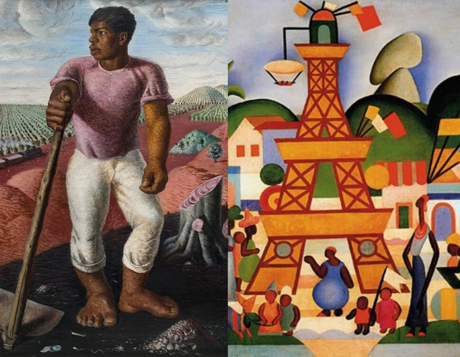
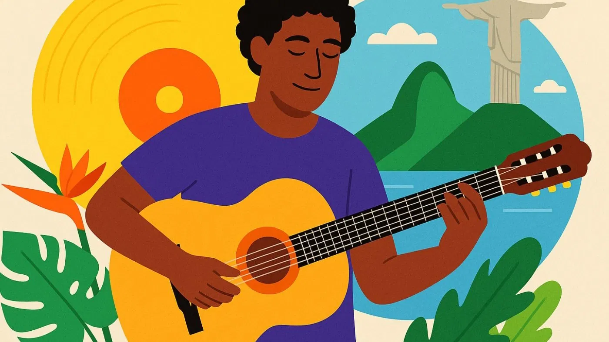
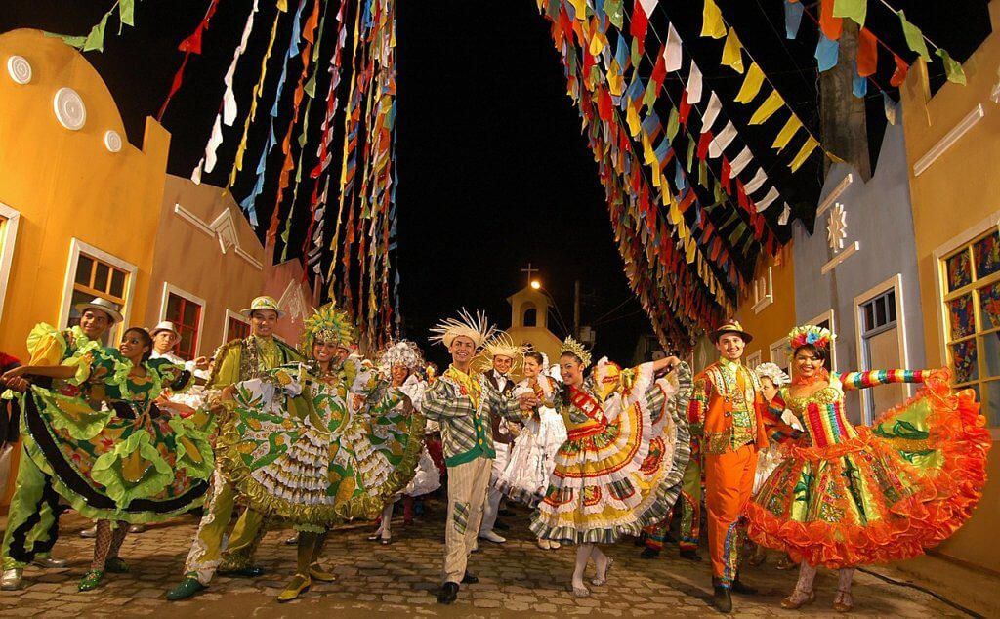
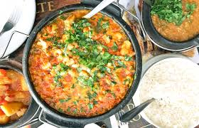

Arte Brasileira

A arte brasileira é marcada pela mistura de influências indígenas, africanas e europeias, presente na pintura, escultura, artesanato e arquitetura.
Música Brasileira

O Brasil possui uma grande diversidade musical, como samba, forró, funk, MPB, sertanejo e bossa nova.
Festas Populares

As festas populares brasileiras incluem o Carnaval, as Festas Juninas, o Bumba Meu Boi e o Círio de Nazaré.
Culinária Brasileira

A culinária do Brasil é rica e variada, com pratos como feijoada, acarajé, pão de queijo, tapioca e churrasco.
História Cultural
A cultura brasileira foi construída ao longo da história com a contribuição dos povos indígenas, africanos e europeus.